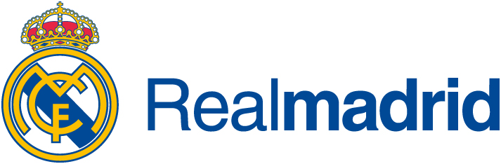

Leyendas del madrid

Cristiano Ronaldo es la máxima estrella del club, llegando a anotar aproximadamente 450 goles y ser el máximo anotador del club
"No quiero ser comparado con nadie, me gustaría imponer mi propio estilo de juego y hacer lo mejor para mí y para el club."

Alfredo Di stefano por muchos años fue la leyenda del club, jugador que llegó a ganar numerosos balones de oro y que conquisto copas de europa
"Un 0-0 es como un domingo sin sol"Raul gonzález es el tercer máximo anotador del Real Madrid, superado únicamente por Cristiano Ronaldo y Karim Benzema, durante su estadía en el club blanco anotó más de 323 goles
"Juega como un ángel. Corre tras todo lo que se mueve. Descansa sólo cuando ve cumplido su objetivo: ganar."

Zinedine Zidane, autor de uno de los mejores goles de la UEFA Champions League, es una de las principales leyendas del club, no solo como jugador sino como director técnico ya que el club bajo su mandato logro la hazaña de conseguir tres copas de Europa seguidas
"Haber sido un buen jugador no te garantiza ser un buen entrenador; puede ayudar, pero nada más"